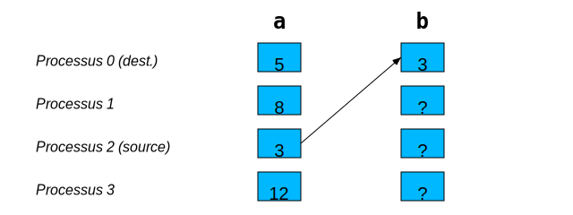

Communications point-à-point#
Elles sont locales, c’est-à-dire que seuls deux processus sont impliqués : ils sont les seuls à appeler réciproquement des fonctions de communication, donc ils sont les seuls à participer à cet échange
Note : les appels aux fonctions d’envoi et de réception viennent toujours par paires sur des processus différents
Les fonctions d’envoi et de réception peuvent être bloquantes ou non
MPI_Send() (bloquant)#
En C :
int MPI_Send(void *envoi, int compte, MPI_Datatype type,
int dest, int etiquette, MPI_Comm comm)
envoi: adresse en mémoire du premier élément à envoyercompte: nombre d’éléments de typetypetype: type MPI tel queMPI_INT,MPI_DOUBLE, etc.dest: rang du processus recevantetiquette: nombre entier identifiant le type de transfert
comm.send(objet, dest=dest, tag=etiquette)
objet: n’importe quel objet sérialisable viapickle
MPI_Recv() (bloquant)#
En C :
int MPI_Recv(void *recept, int compte, MPI_Datatype type,
int source, int etiquette, MPI_Comm comm,
MPI_Status *etat)
recept: adresse en mémoire du premier élément à recevoircompte: nombre maximal d’éléments de typetypesource: rang du processus transmettant, ça peut êtreMPI_ANY_SOURCEetiquette: ça peut êtreMPI_ANY_TAGetat: informations sur le transfert.count: nombre d’éléments reçus de typetype.MPI_SOURCE: rang de la source des données.MPI_TAG: étiquette du transfert
objet = comm.recv(source=source, tag=etiquette, status=etat)
objet: une variable ou une partie d’un objet modifiable, pour recevoir l’objet désérialisésource:MPI.ANY_SOURCE(valeur par défaut) ou un rang précisetiquette:MPI.ANY_TAG(valeur par défaut) ou un nombre précisetat:None(valeur par défaut) ou objet de typeMPI.Status.count: nombre d’octets reçus.source: rang de la source des données.tag: étiquette du transfert
Exemple - MPI_Send et MPI_Recv#
Chaque processus a ses propres variables a et b.
Le processus 2 envoie la valeur de son a vers
le processus 0 qui reçoit cette valeur via son b.

En C :
if (proc == 2) {
MPI_Send(&a, 1, MPI_INT, 0, 746, MPI_COMM_WORLD);
}
else if (proc == 0) {
MPI_Recv(&b, 1, MPI_INT, 2, 746, MPI_COMM_WORLD, &etat);
}
En Python :
if proc == 2:
MPI.COMM_WORLD.send(a, dest=0, tag=746)
elif proc == 0:
b = MPI.COMM_WORLD.recv(source=2, tag=746)
Exercice #2 - Envoi d’une matrice#
Votre objectif : envoyer une matrice 4x4 du processus 0 au processus 1 :
Dans le répertoire
exercices, éditez le fichiersend_matrix.c(ousend_matrix.py) pour programmer le transfert de la matriceCompilez le code et lancez-le avec deux (2) processus
Éviter les situations d’interblocage#
Soit le code C suivant :
if (proc == 0) {
MPI_Ssend(&a, 1, MPI_INT, 2, 10, MPI_COMM_WORLD);
MPI_Recv( &b, 1, MPI_INT, 2, 11, MPI_COMM_WORLD, &etat);
}
else if (proc == 2) {
MPI_Ssend(&b, 1, MPI_INT, 0, 11, MPI_COMM_WORLD);
MPI_Recv( &a, 1, MPI_INT, 0, 10, MPI_COMM_WORLD, &etat);
}
MPI_Ssend()(oucomm.Send()en Python) est une version sans mémoire tampon, ce qui la rend toujours bloquanteDans le cas ci-haut, les deux processus attendent que l’autre fasse appel à
MPI_Recv. Bref, ce code est erroné!Avec
MPI_Send(oucomm.send()en Python), le code resterait à risque ; la quantité de mémoire tampon étant limitée, le code bloquera lors de l’échange de gros messages
Solution 1#
On change l’ordre des appels à MPI_Ssend
et MPI_Recv sur un des deux processus :
if (proc == 0) {
MPI_Ssend(&a, 1, MPI_INT, 2, 10, MPI_COMM_WORLD);
MPI_Recv( &b, 1, MPI_INT, 2, 11, MPI_COMM_WORLD, &etat);
}
else if (proc == 2) {
MPI_Recv( &a, 1, MPI_INT, 0, 10, MPI_COMM_WORLD, &etat);
MPI_Ssend(&b, 1, MPI_INT, 0, 11, MPI_COMM_WORLD);
}
On peut généraliser la technique à plus de processus :
Les processus pairs commencent par envoyer
Les processus impairs commencent par recevoir
Exercice #3 - Échange de vecteurs#
L’objectif : échanger un petit vecteur de données.
Dans le répertoire
exercices, éditez le fichierexchange.c(ouexchange.py) pour programmer l’échange de donnéesCompilez le code et lancez-le avec deux (2) processus
Solution 2#
On utilise des communications non bloquantes pour démarrer les transferts. Ainsi, même si l’envoi n’est pas terminé, on peut commencer la réception tout en évitant l’interblocage.
Exemple en C :
if (proc == 0) {
MPI_Isend(&a, 1, MPI_INT, 2, 10, MPI_COMM_WORLD, &requete);
MPI_Recv( &b, 1, MPI_INT, 2, 11, MPI_COMM_WORLD, &etat);
}
else if (proc == 2) {
MPI_Isend(&b, 1, MPI_INT, 0, 11, MPI_COMM_WORLD, &requete);
MPI_Recv( &a, 1, MPI_INT, 0, 10, MPI_COMM_WORLD, &etat);
}
MPI_Wait(&requete, &etat);
Exemple en Python :
if proc == 0:
requete = comm.isend(a, dest=2, tag=10)
b = comm.recv(source=2, tag=11)
elif proc == 2:
requete = comm.isend(b, dest=0, tag=11)
a = comm.recv(source=0, tag=10)
requete.wait()
Communications non bloquantes#
En C :
int MPI_Isend(void *envoi, int compte, MPI_Datatype type,
int dest, int etiquette, MPI_Comm comm,
MPI_Request *requete)
int MPI_Irecv(void *recept, int compte, MPI_Datatype type,
int source, int etiquette, MPI_Comm comm,
MPI_Request *requete)
Il n’est pas nécessaire que l’envoi et la réception soient tous les deux bloquants ou non bloquants (toutes les combinaisons sont permises)
Après l’appel à
MPI_IsendouMPI_Irecv, on doit utiliser l’argumentrequetepour s’assurer que la communication est complétée
int MPI_Wait(MPI_Request *requete, MPI_Status *etat)
MPI_Waitest bloquante. Elle retourne quand la communication liée àrequeteest terminéeQuand la communication a terminé, on peut réutiliser les vecteurs transmis ou reçus
requete = comm.isend(envoi, dest, tag=0)
requete.wait()
requete = comm.irecv(source=ANY_SOURCE, tag=ANY_TAG)
recept = requete.wait()
Lors de la réception, c’est
requete.wait()qui retourne l’objet reçu